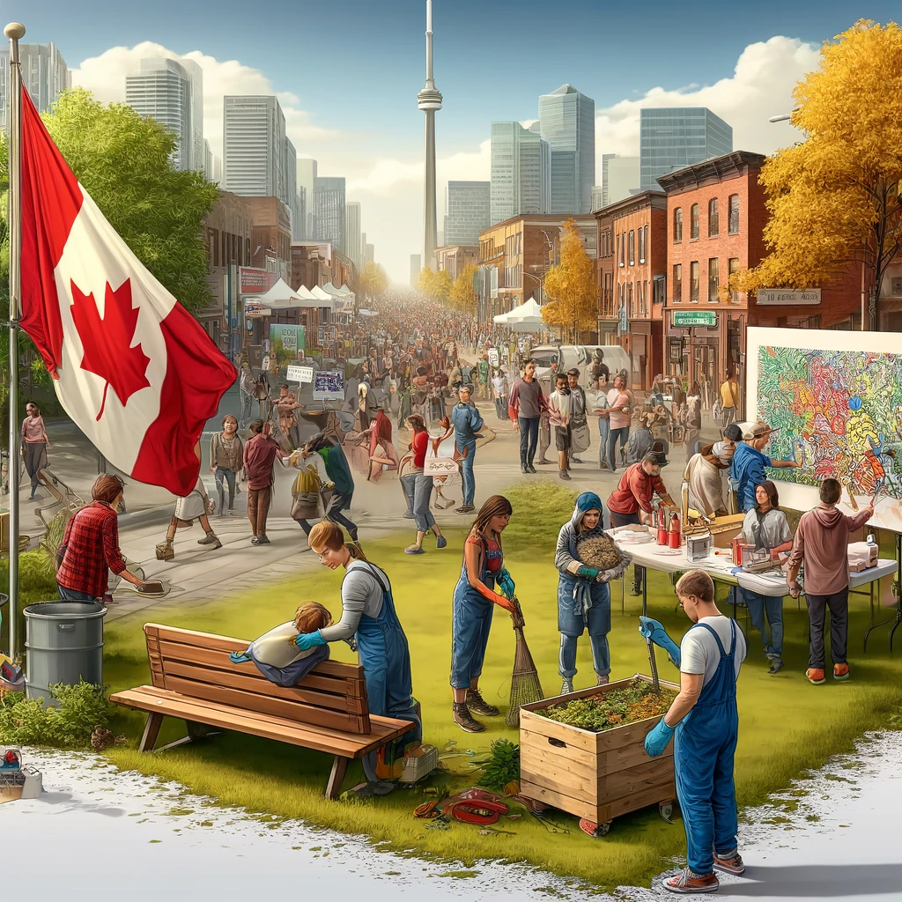

Learn More About the Major Political Infrastructure of Canada
Click on any image to navigate.
Head Back to Assignments
Go To Next Page
Political Parties
Elected Officials

Civil Society Groups
Social Media
{{ message }}